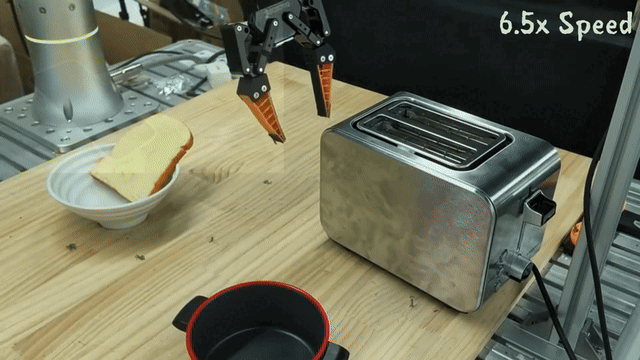

RoboPrompt: Intuitive Robot Policy Steering with Sparse Human Input
arXiv, 2026
RoboPrompt lets users steer diffusion and flow-matching robot policies with sparse target points, drawn traces, and coarse directional guidance. A reusable module turns human intent into action drafts that the base policy refines, enabling intuitive failure recovery and policy improvement through steered rollouts.